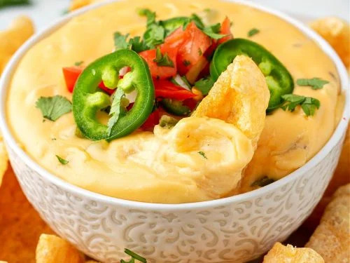

Queso

Required Ingredients
- 1oz cream cheese
- 1/4 cup extra sharp cheddar
- 1/4 cup extra heavy whipping cream
(Optional) Extras and Spices
- Salt
- Pepper
- Garlic Powder
- Smoked Paprika
- Diced Jalapeños
- Diced Tomatoes
The Recipe
- Melt cream cheese so it gets soft enough to smear with a silicon spatula.
- Very slowly add cream until you have a good texture going.
- Gradually add cheddar and stir as it melts.
- (Optional) Add your perferred extras and spices.
- Pour queso into glass container, and add diced tomatoes on-top.
- Serve and enjoy!